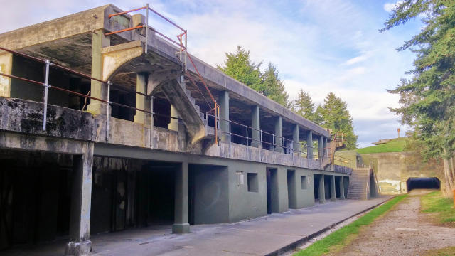
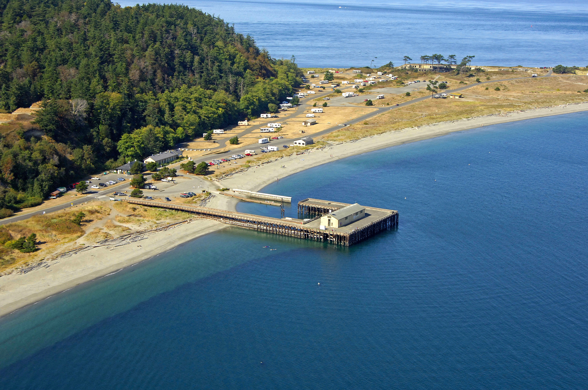
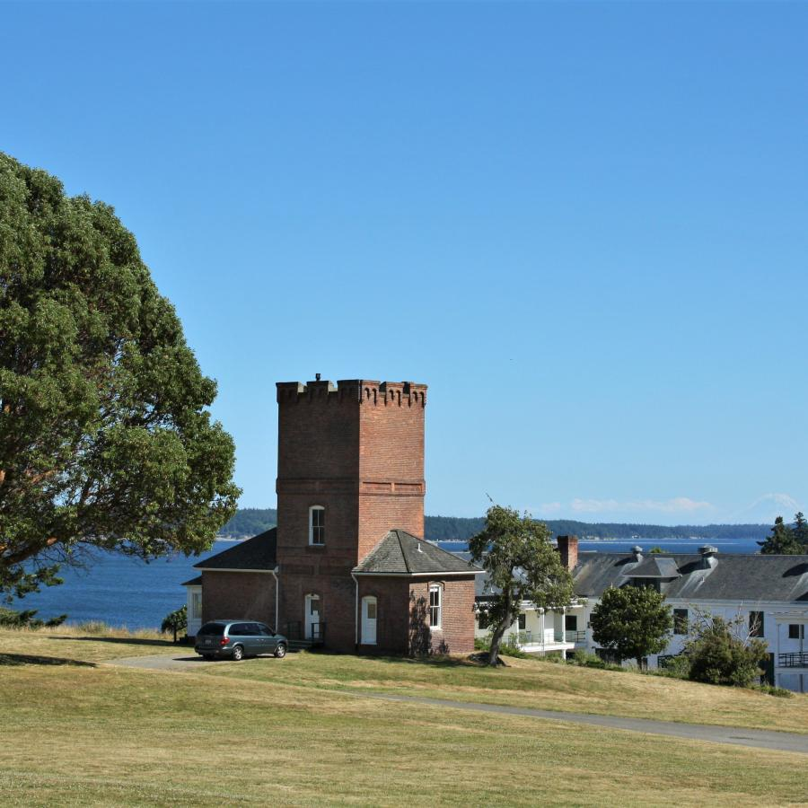

A Journey Through Nature's Splendor
This is a brief introduction to the Fort Worden hike...
Fort Worden Historical State Park is a sprawling multi-use park overlooking Admiralty Inlet at the entrance to Puget Sound. Camp, explore beaches, forests, historic gun batteries, and museums, or attend a workshop, art exhibit, or concert in a variety of historic facilities on site.


